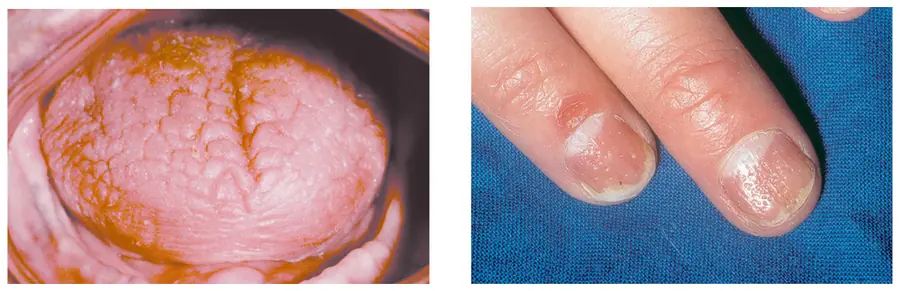

نسخه استخراجشده؛ ترجمه یا تأیید علمی انجام نشده است. وضعیت: captured
خانم ۵۲ سالهای که تا دو سال پیش تقریباً پوسیدگی نداشت، حالا چند پوسیدگی سرویکال تازه دارد. میگوید بدون آب نمیتواند نان خشک را قورت بدهد و چشمهایش همیشه «شندار» است. زبانش شیاردار و گوشههای لبش ترکخورده است. چه بیماریای در ذهنت است؟

سندرم شوگرن بیماری خودایمنی غدد برونریز است: لنفوسیتها غدد بزاقی و اشکی را پر میکنند و کمکم از بین میبرند.
کمآبی بزاق، بزرگی پاروتید، زبان شیاردار و بیپاپی، تغییر چشایی، سختی بلع، کاندیدیازیس و کیلیت زاویهای، و پوسیدگی زیاد، بهویژه در ناحیهی سرویکال و CEJ.
حدود ۵٪ بیماران شوگرن به لنفوم (بیشتر از نوع MALT) میرسند. بزرگی پایدار پاروتید یا غدد لنفاوی گردن را جدی بگیر و ارجاع بده.
رسوب بیش از حد کلاژن پوست و اندامها را سفت میکند؛ درگیری مری، ریه، قلب و کلیه عارضههای جدیتر را میسازد. زنان حدود سه برابر مردان و بیشتر بین ۳۰ تا ۵۰ سالگی. پدیدهی رینود و اختلال حرکت مری شایع است.
برای بیمار اسکلرودرمی در آغاز و سپس دورهای پانورامیک بگیر تا یکپارچگی فک پایین را پیگیری کنی.
نوع سؤال: ساخت کلمه · 5 خانه
حروف منبع: ژ · ک · ل · ن · ا